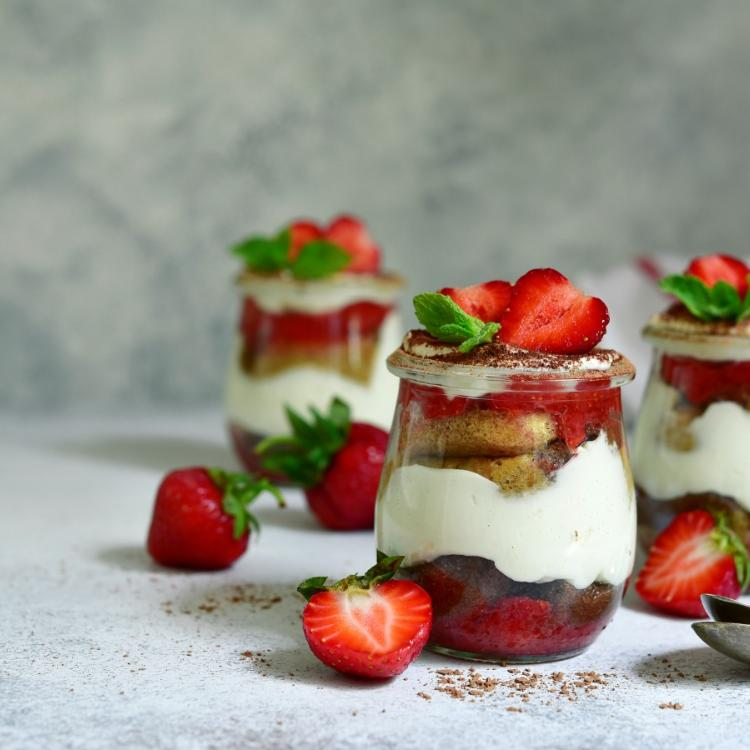

Triffle
truskawkowy z
makaronikami

Czas przygotowania: 25 min
Typ diety: dowolna
Typ posiłku: deser
Triffle
truskawkowy z
makaronikami
Czas przygotowania: 25 min
Typ diety: dowolna
Typ posiłku: deser
Galaretkę rozpuszczamy w gorącej wodzie i ją studzimy. Truskawki pozbawiamy szypułek, przekrawamy na pół i przekładamy do wysokiego naczynia. Owoce zalewamy tężejącą galaretką i przekładamy do lodówki na min. 2 godziny.Zimną śmietanę, cukier puder i ekstrakt waniliowy dodajemy do miski. Delikatnie ubijamy, aż masa będzie puszysta, ale nie sztywna. Następnie dodajemy mascarpone i ponownie ubijamy, aż krem stanie się gęsty i dość sztywny.
Na galaretkę wykładamy krem i całość dekorujemy makaronikami. Deser podajemy od razu, aby ciastka nie zmiękły.